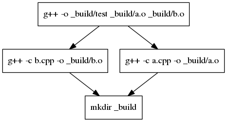
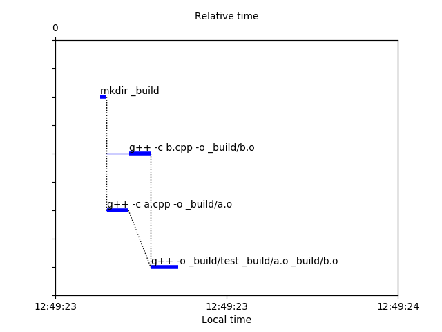
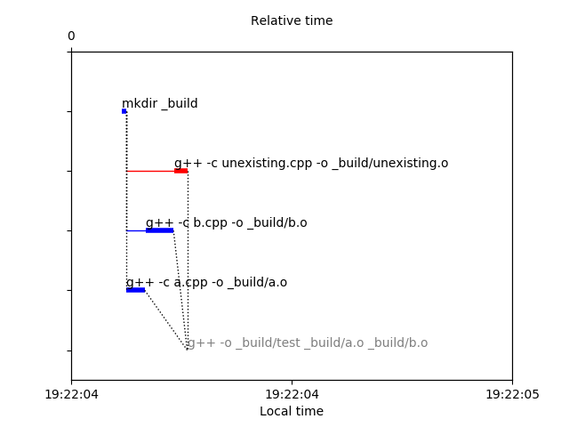

Drawings¶
Dependency graph¶
You can draw a dependency graph with DependencyGraph:
>>> from ActionTree import DependencyGraph
>>> graph = DependencyGraph(link)
>>> graph.write_to_png("link_dependency_graph.png")

link_dependency_graph.png
Gantt chart¶
You can draw a Gantt chart of the execution with GanttChart:
>>> from ActionTree import GanttChart
>>> chart = GanttChart(link_report)
>>> chart.write_to_png("link_gantt_chart.png")

link_gantt_chart.png
And if some action fails, you get:
>>> compile_unexisting = CallSubprocess(["g++", "-c", "unexisting.cpp", "-o", "_build/unexisting.o"])
>>> compile_unexisting.add_dependency(make_build_dir)
>>> link.add_dependency(compile_unexisting)
>>> failed_link_report = execute(link, keep_going=True, do_raise=False)
>>> failed_link_report.is_success
False
>>> chart = GanttChart(failed_link_report)
>>> chart.write_to_png("failed_link_gantt_chart.png")

failed_link_gantt_chart.png